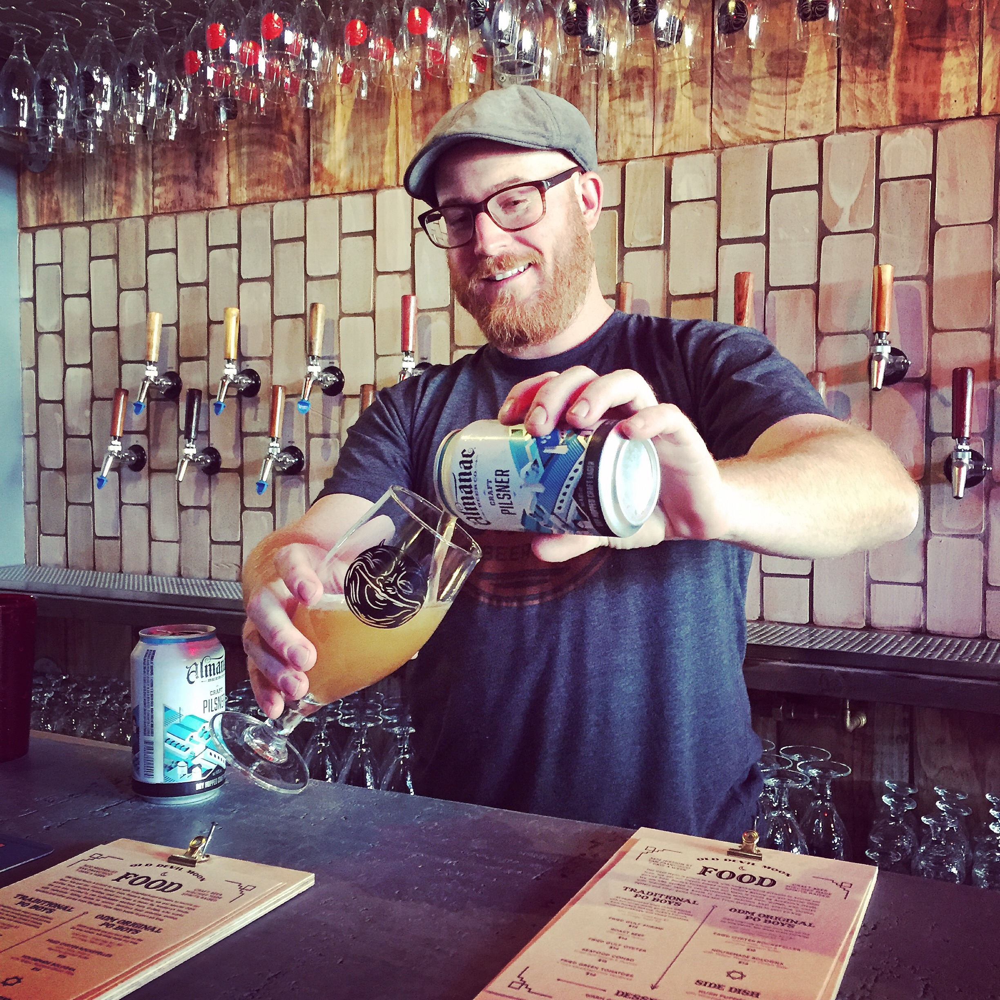

Your guide
I was nervous, over-prepared, & guessing.
When I studied for the Cicerone® exams, I wished someone would show me exactly what to study, at what depth, and how to beat the tasting exam. It was frustrating, so after passing, I built it myself. Since 2014, the vast majority of Certified Cicerones® have used my Beer Scholar course to pass.
Today I'm an Advanced Cicerone, a National BJCP beer judge, and a sensory and beer educator. I've spent over a decade turning the Cicerone syllabus into the fastest path to passing.
Advanced Cicerone®National BJCP JudgeGABF Judge (4x)Partner, Old Devil MoonCo-founder, SF Homebrewer's Guild